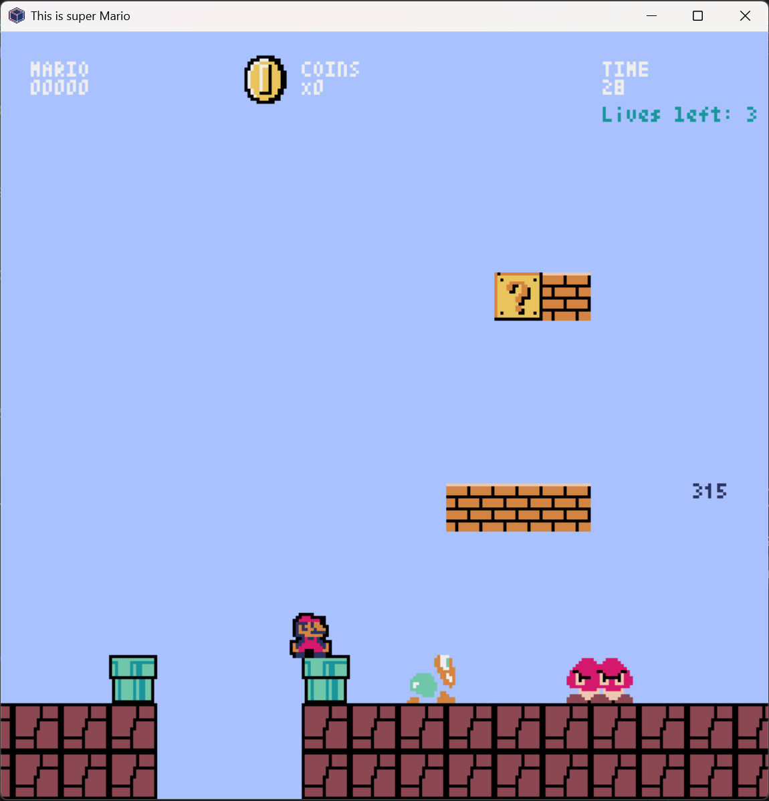

Super Mario Bros Clone - Python Game Project
This is a faithful recreation of the classic Super Mario Bros game, built entirely in Python using the Pyxel retro game engine. The project demonstrates advanced object-oriented programming concepts, game physics, collision detection, and sprite-based graphics rendering.

Key Features
- Complete Mario Gameplay: Full side-scrolling platformer with Mario's classic movement mechanics including running, jumping, and power-up transformations
- Enemy: Goombas and Koopa Troopas that patrol platforms and change direction upon collision
- Interactive World: Question blocks that dispense coins and power-up mushrooms, breakable blocks (breakable only as Super Mario), pipes, and aerial blocks
- Dynamic Scrolling: Smooth camera movement that follows Mario while maintaining proper collision boundaries
- Scoring System: Comprehensive point tracking including coins collected, time bonuses, and high score persistence
- Lives & Respawning: Traditional Mario lives system with level reset mechanics
- Level Design: Carefully crafted level layout with holes, platforms, and strategic enemy placement
- Retro Aesthetics: Authentic 8-bit style graphics using Pyxel's built-in sprite system
Technical Implementation
- Language: Python 3.x
- Game Engine: Pyxel (retro game development framework)
- Architecture: Object-oriented design with separate classes for each game entity (Mario, enemies, blocks, etc.)
- Graphics: Custom sprite sheets loaded from Pyxel resource files
- Physics: Custom gravity, jumping mechanics, and collision detection systems
- Game Loop: Traditional update/draw cycle with frame-based timing
Game Mechanics
- Mario can move left/right, jump, and collect power-ups to become Super Mario
- Enemies spawn dynamically as Mario progresses through the level
- Complex collision system handles interactions between Mario, enemies, blocks, and the environment
- Time-based scoring with bonus points for speed completion
- Game over conditions and level completion victory screen
Controls
- Arrow keys for movement and jumping
- Q to quit
- Enter to restart after game over
Technologies Used
Python
Pyxel
Object-Oriented Programming
Game Physics
Collision Detection